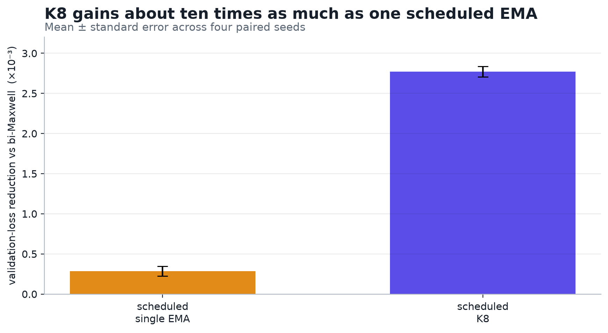
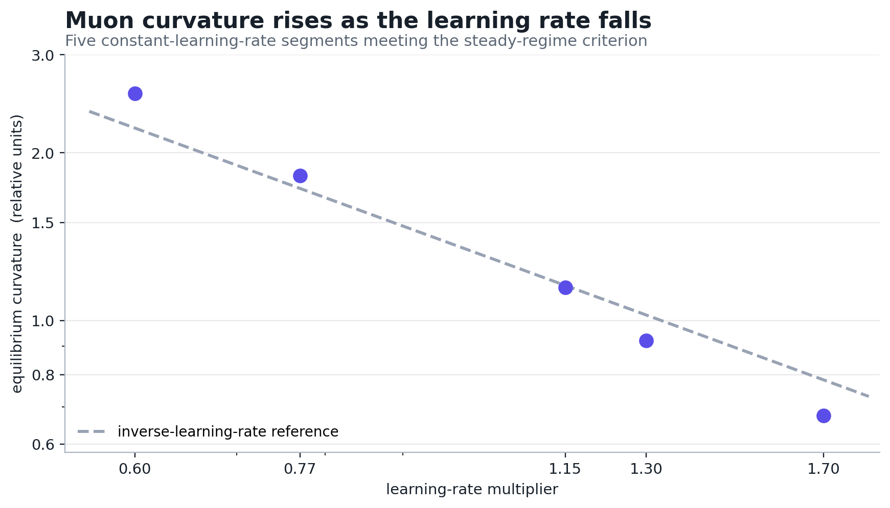
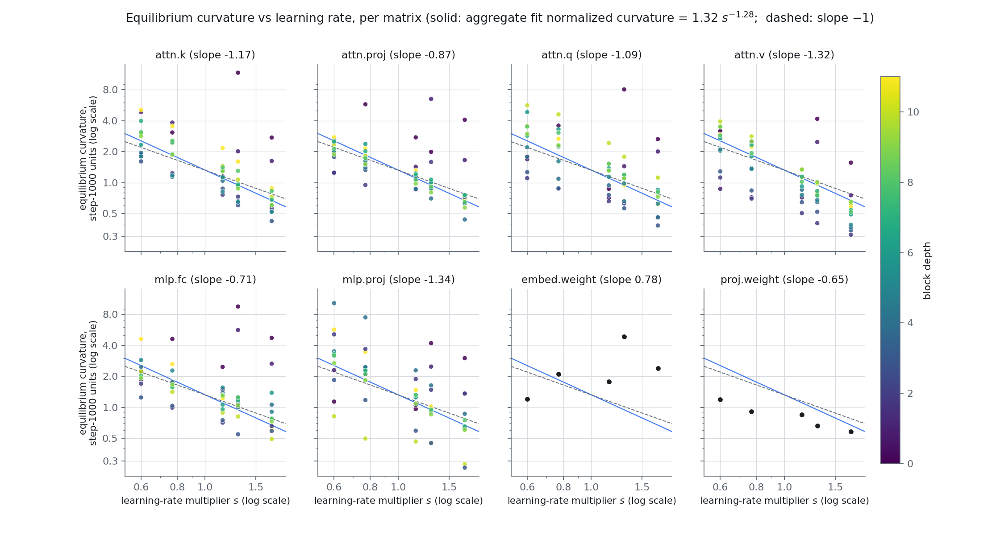
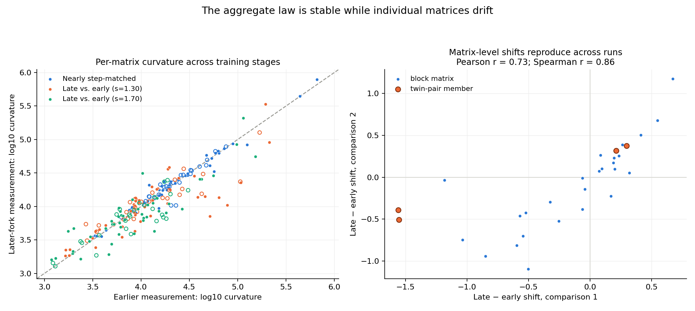
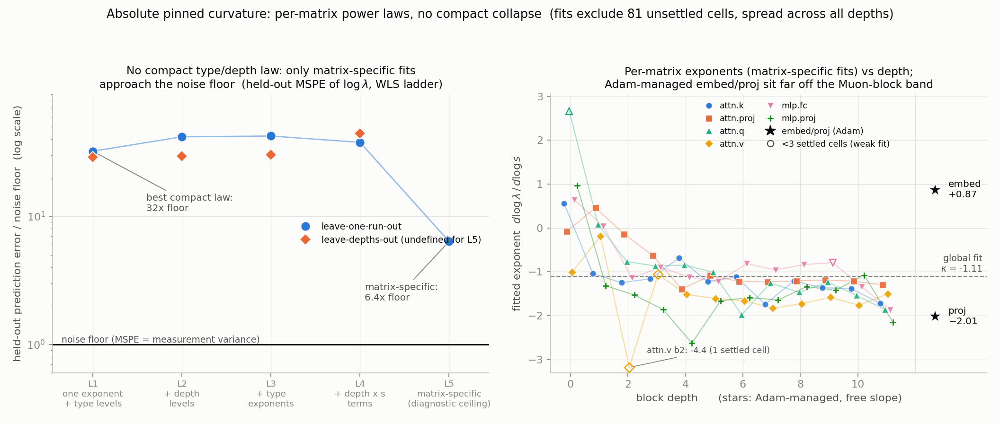
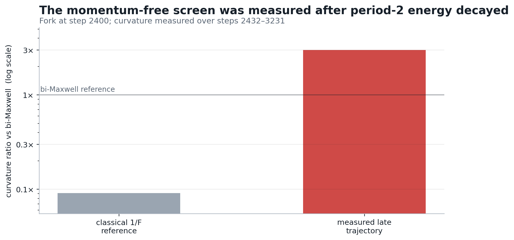

Toward a principled theory of momentum
Research memo · 29 August 2026
We want a momentum rule whose temporal weighting follows the optimizer's measured state instead of a hand-designed training schedule. The central question is which property of recent gradient history should control that weighting.
Working hypothesis. In Muon, the useful state describes how gradient variation at different time scales is oriented within each weight matrix. Momentum changes the relative influence of those directions before the matrix-sign step.
1. Scheduling explains part of the K-Maxwell gain
Scheduling the decay of one exponential moving average (EMA) of past gradients recovers about one third of the validation-loss improvement of K8—an eight-EMA K-Maxwell mixture—over bi-Maxwell, the matched two-EMA control. K6, the six-EMA mixture, and K8 are too close to distinguish in a single-seed discovery comparison, so these runs provide no resolved benefit from the extra two summaries.
The comparison varies two freedoms in temporal weighting. Scheduling one EMA changes its memory length during training. K-Maxwell instead maintains several EMA summaries with different decay rates and schedules their mixture weights.

The remaining endpoint gap has three coupled sources: the temporal weights used at the end, the gradient summaries stored in the momentum buffers, and the model parameters produced by the preceding updates. Each can contribute to K8's lower validation loss. Endpoint training runs therefore establish that scheduling helps and leave the additional K-Maxwell gain causally unassigned.
2. Temporal weighting can become direction selection
The mechanism hypothesis is that different time scales occupy different matrix directions. Ideal matrix sign removes a common positive multiplier from its input, so temporal weighting matters when it changes the relative mixture of those directions.
A two-component local model is enough to expose the mechanism:
Here ctslow and ctfast are slow and fast scalar variations measured over a chosen window, while Aslow and Afast are their matrix directions. In the proposed measurement, these objects come from a finite-window Fourier projection of the observed gradient matrices; the exact estimator is in Appendix F.
For one harmonic component at frequency ω, write
We suppress the window endpoint in Aω and assume that this local coefficient is approximately stationary over the kernel's effective memory. Applying temporal weights wk gives
The minus sign in H comes directly from the delay: replacing t by t − k subtracts the phase ωk. Thus H(ω) gives both the amplitude change and phase shift applied to that component.
With two measured components whose matrix coefficients point in different singular directions, the matrix presented to Muon is
The kernel changes Muon's direction through relative component weights. Muon takes {{inline:muon_update}}, and ideal matrix sign satisfies {{inline:msign_scale}}, so common scale disappears. Changing the temporal weights changes the complex ratio {{inline:response_ratio}}. That ratio changes how much each matrix direction contributes to Zt and can rotate Pt.
The candidate state for adaptive momentum is therefore a time-scale-to-direction map: which temporal bands contribute to which matrix directions, and how a candidate weighting would rotate the resulting Muon update. Whether this map predicts useful rotations is an empirical question.
3. Curvature constrains the theory
The fixed-learning-rate runs show curvature pinning: once a run settles, its median leading curvature is higher at smaller learning-rate multipliers. Each point below summarizes a separate trajectory by taking the median over its Muon-managed matrices. The five accepted segments fit {{inline:normalized_curvature_fit}}. Here s is the learning-rate multiplier and λ̃ is each matrix's leading curvature divided by its step-1000 value; the ordinary inverse-multiplier reference has slope −1.

The median is unusually smooth because it averages over different matrix-level laws. Most Muon-managed matrices individually follow a tight power law in the learning-rate multiplier, but their slopes and vertical levels differ by much more than the estimated measurement noise. Their deviations lie on both sides of the median and largely cancel there.

attn.proj, mlp.proj, and
proj.weight refer to three different matrices. Each colored
point is one residual-block matrix; the two black-dot panels contain the
single embedding and output matrices. Curvature is normalized by each
matrix's step-1000 value. The solid line repeats the aggregate −1.28 fit
and the dashed line has slope −1. Hollow or visibly isolated points reflect
weakly settled estimates; such cells occur throughout the network. The
embedding fit is especially unreliable because adjacent-checkpoint spikes
reach 15×.Training progress appears to move individual matrices without changing the aggregate inverse-learning-rate law. The aggregate exponent was reproduced at a later checkpoint, while individual matrices measured at different stages shifted together; deeper blocks tended to move higher. Matrices measured at nearly the same training step agreed much more closely. The aggregate law survives because the matrix-level shifts largely cancel in the median.

Near-matched matrix gaps also reproduced across checkpoints, revealing a stable matrix-identity component beneath the slower drift. The measurement-step pattern suggests training-progress drift but does not establish it. Comparing early and late windows within the existing runs can test this interpretation without additional training.
Matrix type and block depth capture some structure but do not predict held-out absolute curvatures to the measurement floor. Removing the step-1000 normalization from the analysis leaves the same heterogeneity. Allowing each matrix its own exponent and level performs much better, yet still misses the estimated measurement floor and cannot predict an unseen matrix. Within each measured state, the current data therefore support matrix-specific power laws, with the variables controlling their slopes and levels still unidentified. Any predictive law must account for both the reproducible matrix-identity component and its drift over training.

The recorded variables do not yet predict the matrix-specific laws accurately. Matrix type, depth, shape, initial curvature, and raw-gradient norm leave large held-out errors and fail to explain the fitted constants to the measurement floor. Near-matched matrix pairs also exhibit clearly different fitted slopes or levels, so a smooth rule built from those fields is insufficient. The proxy tests also expose a gap in the instrumentation: the logs contain the raw gradient's norm and polar direction, while the candidate theories concern the scale and polar direction of the temporally filtered momentum matrix.
The next measurement should resolve a candidate state at the same per-matrix and training-time granularity: the singular values and directions of the momentum matrix before matrix sign, separated by the temporal components that produced it. This momentum spectrum is the time-scale-to-direction map proposed in Section 2. It could record both matrix identity and slow drift, but has not yet been shown to explain the curvature laws.
The fitted slope supports only a normalized trend comparison, not an absolute SGD threshold. An overlay of the rule ηλ = 2 requires physical learning-rate and curvature units. Here the horizontal coordinate is a multiplier on the base step size, and the vertical coordinate is a median of separately normalized per-matrix curvatures, so the plot supports a slope comparison.
A one-dimensional quadratic shows how a temporal kernel moves the classical period-two stability boundary. Let xt be the displacement along one Hessian eigenvector of physical curvature λ, let η = sη0 be the physical step size, and let ρ be the decoupled weight-decay coefficient. Setting Muon's matrix-sign operation aside gives the scalar momentum update
This linear recurrence is stable when every characteristic root lies inside the unit circle. A period-two boundary is the part of that boundary where the first root reaches r = −1, so a perturbation alternates sign without shrinking. Dividing every delayed coordinate by xt removes the parity of t:
For ordinary gradient descent, w0 = 1 and a = 1, recovering ηλcrit = 2. For a general temporal kernel, the inverse-F prediction applies only when period two is the first mode to become unstable.
This equation makes two experimentally distinct predictions. First, hold the kernel fixed and vary the learning rate. The scalar boundary is λcrit = (2 − ηρ)/(ηF), which is approximately proportional to 1/η when ηρ is small. The runs above all use the same bi-Maxwell kernel, and hence the same F, but their post-fork trajectories are not held at the same state. They provide a descriptive slope comparison: the aggregate slope is close to −1, while the resolved deviation and differences among matrices require a richer empirical law.
Second, hold the learning rate and training state fixed and vary F: the critical curvature should scale as 1/F. This is why F is useful. It is the kernel's response to a sign-alternating gradient, and it is the only property of the kernel that enters the period-two boundary. The current runs do not test this prediction because changing the kernel also changed the stored momentum and the model trajectory. Section 4 proposes the same-state intervention that would test it directly.
Muon adds a directional complication: matrix sign removes common scale, but reweighting temporal components can rotate the matrix before that operation. The available momentum-free comparison cannot test the F prediction. It was measured late, after alternating energy had faded, and it changed the optimizer, stored history, and model trajectory together. Its details are in Appendix C.
4. Proposed experiment: does temporal weighting rotate Muon's update?
The next experiment tests whether three measured summaries determine the immediate Muon update. For this first test, restrict the kernels to nonnegative temporal weights and normalize their response to a constant gradient to one. Mean lag is the average age of the gradients a kernel uses. Then match mean lag, alternating response F, and white-noise gain, the output variance for independent unit-variance input. Allow their other weights to differ. If the resulting updates differ, these three summaries do not determine the kernel's immediate effect.
One model and one bank of stored gradient averages
Unit constant response; same mean lag, F, and noise gain
Momentum spectrum and update angles; then fixed-window loss and curvature
At each checkpoint, record each candidate's pre-sign singular values and ideal-sign polar factor. Project every EMA stream onto the unchanged control's singular vectors and retain its residual. Compare candidate-to-control matrix cosines and leading-subspace angles. These measurements test the time-scale-to-direction state proposed in Section 2.
Run this comparison from early, middle, and late checkpoints because the useful temporal weighting may depend on training state. Each fork keeps the model, stored gradient averages, data order, learning-rate schedule, and all other optimizer state fixed. Only the coefficients combining the stored averages change. The continuation follows the original schedule for a fixed measurement window chosen before launch, giving faster feedback than a full run.
The immediate readouts are the matrix cosine and leading-subspace angle between the two matrix-sign updates. The continuation then tests whether validation loss or curvature separates by more than it does between two unchanged control forks. A reproducible separation would show that the three descriptors do not determine the immediate update. No resolved separation at any checkpoint would leave stored-state initialization and trajectory history as competing explanations.
One additional comparison varies F while maintaining unit response to a constant gradient and matching mean lag and noise gain. Run it near steps 1500–2000, while the gradient history still has a strong alternating component. This is the direct test of the scalar period-two prediction developed in Section 3.
5. Proposed program: from measurement to a small controller
If the same-state test identifies a reproducible effect, retain the smallest EMA bank that preserves it. The implementation exposes at most one user-facing hyperparameter.
Let qt contain measurements available to the optimizer: the learning rate, the measured curvature and its inverse-learning-rate reference, and the per-time-scale projection readouts from Section 4. For kernel weights w, define Zw = ∑k wkGt−k and Pw = msign(Zw). Constrain the online EMA bank to a bounded response to white-noise input. Use the current gradient gt, Hessian ℋt, and candidate Muon update Pw to choose weights that minimize expected one-step loss change conditional on that state:
Use the optimized weight vectors at the three checkpoints as observations. Test whether one measured state variable predicts those weights, then whether the resulting rule predicts held-out rotation and loss or curvature. Keep only features that pass both tests at all three checkpoints.
The scalar reference gets a separate same-state test between steps 1500 and 2000, while period-two gradient energy is still large. Vary alternating response F while holding DC response, average lag, and white-noise response fixed; then measure the immediate matrix-sign rotation and the curvature reached during the continuation.
- Same-state response. Compare kernels matched on average lag and their responses to sign-alternating and white-noise inputs at early, middle, and late checkpoints.
- Post-fork outcome. Run the pre-specified fixed window and record first-step rotation, loss, and curvature.
- Scalar stability check. At a step-1500–2000 checkpoint, vary alternating response F while holding the other summaries fixed.
- State selection. Test whether one measured state variable predicts the optimized weights and held-out rotation or loss across all three checkpoints.
- Implementation check. Test the smallest EMA bank across seeds on baseline, high-learning-rate, and low-learning-rate trajectories.
Decision requested. Approve the same-state response map and its fixed continuation window. Defer another power-law fit, broad K-Maxwell tuning, and controller implementation until those measurements identify a reproducible state variable.
Estimated accelerator budget on the current 8×A100 node: 0.5 aggregate GPU-hours for the response map, 1.5 for the first fixed-window continuations, 2 for the scalar stability fork, and 0.5 per validation rerun.
Appendices
A. Exact discovery measurements
| momentum rule | validation loss | gain over matched control |
|---|---|---|
| bi-Maxwell control | 3.27547 | — |
| scheduled single EMA | 3.27449 | +0.00098 |
| scheduled K6 | 3.27261 | +0.00286 |
| scheduled K8 | 3.27250 | +0.00297 |
These are matched single-seed discovery runs forked from the same step-1000 state. The scheduled single EMA moves from decay 0.982 to 0.944. Its improvement was +0.00068 in a second stack, so the one-third comparison is an approximate scale.
The bi-Maxwell control uses EMA decays 0.85 and 0.98 with mixture weights 0.4385 and 0.5615 after the step-1000 switch.
A separate scheduled power-law approximation lost to its control, but its realized average lag and alternating/noise responses missed the intended match. That run does not compare kernel families at fixed descriptors.
B. Curvature measurements and evidence limits
The steady points in the figure are (learning-rate multiplier, normalized median curvature) = (0.60, 2.56), (0.77, 1.82), (1.15, 1.147), (1.30, 0.92), and (1.70, 0.675). Two lower-learning-rate runs failed the stated steady-regime criterion and were excluded. The accepted windows were steps 3000–3249, 2500–3000, 2125–2375, 1375–1625, and 1250–1500, respectively; the s = 1.30 window was still drifting downward at its edge.
Curvature is the median leading eigenvalue of each Muon matrix's diagonal Hessian block on a fixed batch, normalized to that matrix's step-1000 baseline. The transient window is 250 steps after a learning-rate raise or the step-1000 kernel switch, and 125 steps after a learning-rate drop. After that window, a segment is accepted when its whole-segment slope in log median curvature is within the length-scaled one-standard-deviation noise floor. All five points use 8-iteration Lanczos with the convergence correction and tail gate. Eight iterations underestimate the leading eigenvalue; the correction extrapolates the remaining gap by assuming geometric decay in successive Ritz-value increments. The tail gate drops matrix estimates whose extrapolated remaining error exceeds 5%. Each point is one segment from one trajectory; its uncertainty describes within-run measurement variation.
The geometric-tail extrapolation and tail gate are a provisional analysis rule; calibration of its error model remains future work. The five points are descriptive results accepted under that rule.
The law ladder fits absolute corrected eigenvalues. L1 uses one exponent and matrix-type levels; L2 adds depth-dependent levels; L3 allows type-specific exponents; L4 adds depth-dependent exponents; L5 gives every matrix its own level and exponent. Model selection uses held-out learning-rate runs, with a separate even-depth to odd-depth test. Fits exclude 81 of 360 Muon-matrix cells whose within-window drift exceeds three estimated standard errors; those cells are distributed across all depths. L5 is a diagnostic ceiling because it cannot predict an unseen matrix.
The recorded-feature check used matrix type, depth, shape, step-1000 curvature, and raw-gradient norm. The near-match test required the same matrix type, a depth difference of at most one block, and step-1000 curvature and gradient norm within 15%. Six such pairs differed by three to nine fitted standard errors in their law constants. This rejects a smooth, low-capacity rule over the tested neighborhoods. The proposed collapses based on raw-gradient scale and curvature along the raw-gradient polar direction were unsupported; the apparent scale relation largely vanished after controlling for the shared step-1000 state. The corresponding momentum-spectrum quantities were not recorded.
A second five-point bi-Maxwell set forked from step 2400. Its aggregate exponent was −1.19 ± 0.10, consistent with the earlier −1.21 to −1.28 estimates. For the two comparisons whose measurement windows differed by roughly 1,500 training steps, per-matrix log-curvature shifts had 0.5–0.7 root-mean-square magnitude, four to six times the pooled noise estimate; their residuals correlated at Pearson 0.73 and Spearman 0.86. The nearly step-matched comparison had a median offset of 0.03 and roughly twice the pooled noise. Fifteen of eighteen near-match gap comparisons agreed within 1.5 standard errors; all exceptions contained an unsettled cell. These observations motivate, but do not prove, the training-progress interpretation in the main text.
The learning-rate multiplier also scales decoupled weight decay in this harness. The full hybrid Muon–Adam update depends on weight-norm adaptation, cross-block coupling, and finite Newton–Schulz effects, so the plot is a descriptive inverse trend. BF16 rounding and the numerical stabilizer also break the exact scale invariance of ideal matrix sign. The intervention uses the deployed implementation.
C. Late-regime momentum-free comparison (diagnostic only)

This screen changes the optimizer, stored history, model trajectory, and weight norms together. It motivates a same-state test in the earlier period-two regime and carries no causal attribution to F.
D. Statistical scope
The training comparisons use one seed and one checkpoint fork per candidate, so the one-third decomposition is a scale estimate. Published eight-seed results show gains from scheduled EMA mixtures on different stacks; they do not calibrate this one-seed decomposition. The same-state experiment uses duplicate controls at every checkpoint, and the distilled rule is evaluated across seeds. The momentum-free curvature comparison uses a separate trajectory whose weight norms are about 0.31 times the reference. The local Taylor diagnostic omits the explicit decay term and requires a smooth local approximation; the fixed continuation evaluates whether its ranking is useful.
E. Full scalar boundary for an arbitrary kernel
Substitute a trial mode xt = rt into the scalar update from Section 3. Dividing by xt gives
For a curvature scan at fixed η and ρ, hence fixed a, the stability boundary is the first root to reach |r| = 1 as λ increases. Setting r = eiφ and scanning φ handles a power law, K-Maxwell, or any other realized finite kernel. The period-two formula in the main text is the φ = π case.
F. Local Fourier measurement
For an L-step rectangular window ending at step t, the complex matrix coefficient at frequency ω is
At a nonzero, non-Nyquist DFT bin ω = 2πq/L, the factor of two gives the amplitude of an isolated real sinusoid. At other frequencies this is a projection convention subject to finite-window leakage. The experiment registers L, window shape, frequency bins, and normalization before comparing candidate temporal kernels.
G. Matrix-direction readout
At checkpoint t, truncate each kernel to the available history and compute its constant response, mean lag, alternating response, and white-noise gain as
Decompose the unchanged control's pre-sign matrix as Zref = UΣVT. For each EMA stream Ej, record its coordinates UTEjV and the Frobenius norm outside that basis. Compare interventions using the Frobenius cosine of their matrix-sign updates and principal angles between their leading singular subspaces. Every branch uses the same reference basis.
Candidate pairs are screened before training on the finite gradient history available at the fork. Constant response must equal one; mean lag must agree within 0.25 step; alternating response and white-noise gain must each agree within 1% of the reference value. Simulate the fixed continuation and require the same tolerances at every registered readout; if no pair is feasible, report that result instead of relaxing the match. Register evaluation batches and window length before launch. Call a branch difference resolved only when its magnitude exceeds the difference between the two unchanged control forks at every corresponding readout and its sign is stable across the registered evaluation batches.